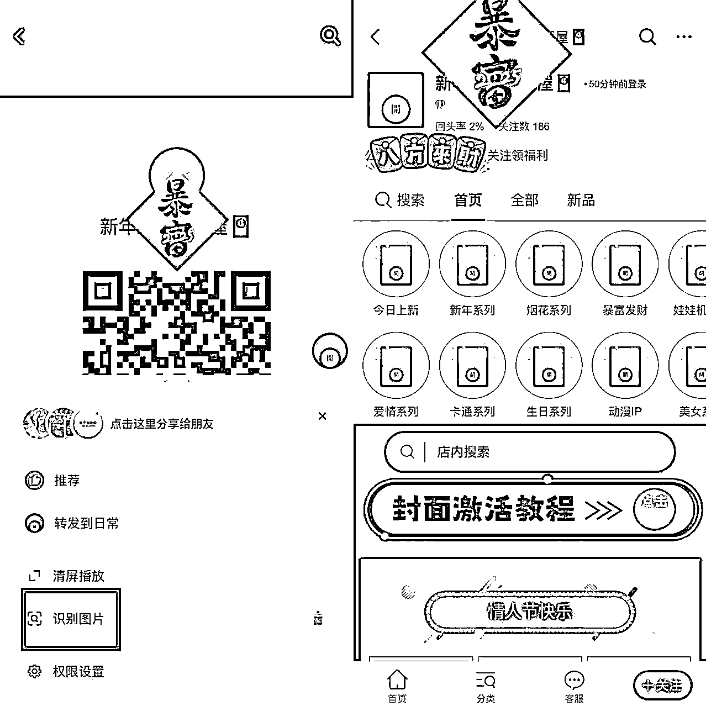

来源：https://s53lvzq1qu.feishu.cn/docx/I84OdoMnTozsrTxseepc896lnfb
1.关于个人搞钱经历
大家好，我是林先生，来自福建。祝大家新年快乐！我是24年下半年尝试开始做副业，在抖音平台做过短视频、直播带货。每天拍短视频、选品、研究学习直播带货。月GMV 2W+，虽然没有太多收益，但是从中学习并积累了一些做短视频的经验。
去年12月我通过抖音了解到知识星球这个软件，然后在“副业赚钱”这个栏目我关注了很久，当时发现“生财有术”几乎天天保持第一！并且已经有6万+人加入，我就抱着试试看的心态，报名了3天的体验课。3天的体验课还没结束，我已经跟当时的鱼丸聊，这三天我自己对赚钱的认知真的比我以前三年提升的还大！所以第三天纪钟老师的直播还没结束，我就果断报名了！到今天正式加入生财40多天了...
2.关于红包封面项目
刚加入生财，就遇到了生财推出的年底最火的项目——红包封面mini航海。幸运的是我还赚到了一点钱（附上截止到今天的收益，还没舍得提现😂）
我是一名新人，和大家分享自己做红包封面的经历，只是简单的分享自己做的一点点经验，或许对新人有些许帮助。还有就是生财很多大佬老生常谈的：输出倒逼输入！我分享的同时，何尝不是对这个项目又深度复盘、总结了一遍呢？
当时刚报名加入生财，看了生财的一些航海手册，觉得真的是干货满满！刚好遇上年底红包封面mini航海这么好的时机，赶紧和鱼丸报了名。本着新人的心态，就算没赚到钱，跟着航海走一遍项目流程都是积累宝贵的经验！
在确定了参加红包封面航海后，在没有拉群之前，我就提前在精华帖找到了拾一教练的 提前预习了这个项目的内容，了解了具体需要哪些准备，哪些是我应该提前要准备好的（微店、公众号、自媒体账号等）因为生怕自己航海开始，跟不上圈友步伐，笨鸟先飞了。
现在看来我这个动作在后来航海开始后，帮我节省了很多时间。在很多人航海开始后几天还在开通微店支付等步骤时，我能迅速的做好微店开通、公众号设置、抖音账号（3个备用）、小红书、视频号账号、朋友圈发布引流等。让我有更多的时间花在研究发布内容、表现形式、流量获取、成交变现等更重要事上。
1.多平台运营策略
红包封面项目可以从抖音、公众号、小红书、视频号，甚至朋友圈都可以进行引流。测试下来，抖音引流的效果最佳。由于在抖音平台有过短视频直播经验，一开始我就在抖音发布视频，到了第三天我把小红书、视频号两个平台的账号全部改成红包封面的账号类型，三个平台同时发布同一个红包封面的视频内容（跨平台发布同一个视频不会被判同质化）。
三个平台，以我个人得到的数据结果来看，视频号流量不错，但是转化很低。因为视频号的人群年龄偏大，对这个项目没兴趣的同时，封面的风格偏年轻化，她们也不知道如何购买和兑换封面。还有一个原因玩视频号的人都想获得免费红包封面，看到付费的就略过了。但是我依旧每天坚持在视频号同步发布视频。
小红书平台是我做红包项目流量最差的平台，最大的原因在于我在小红书发布的也是视频形式，而小红书的用户更愿意看图片笔记、严格来说她们喜欢的书优质美观的笔记。这也是我的短板，因为自己有点“完美主义”，如果发布笔记，总想着要把图片做到很完美（自己觉得）才去发布，这样以来，可能一篇笔记就要花费我几个小时时间。红包封面项目不允许我这么低效率的去干，所以我在小红书发布的也是短视频形式。（你看，没有用心对待，结果就是每条视频就几十个小眼睛）。
最重要的在于抖音平台，用户多，流量大，并且各个年龄段的用户都存在。一旦视频有流量，就不怕没有成交。无非就是转化率的高低而已。并且拾一教练也一直在航海群里强调让我们把重心放在抖音平台，我就更加坚定要把大多数时间花在抖音上面。甚至航海结束，我公众号一篇文章都没发，但是转化率和GMV比公众号小爆文的圈友还高！（附视频号和抖音截图、和圈友转化数据对比）
2.与教练沟通的重要性
在项目执行过程中，有问题我第一时间会咨询教练。教练有丰富的实战经验，他能帮助我们少走非常多的弯路。以下就是我在做项目中，遇到视频没播放量，我咨询教练的对话。这过程中对我之后改变视频形式非常重要的一个启发。再次感谢拾一教练！
3.视频内容形式的探索与改变
看了教练发的参考视频，我发现如果我自己去买一个红包封面，然后再去想文案、脚本再去拍摄，那么效率高不高且不说，自己想出来的文案和脚本不一定是好的，流量就不一定高。“爆款是会重复的”，所以我就换个思路，直接在抖音上搜到这类爆款有趣的短视频，把它保存下载下来（去水印）播放，自己用另一台手机架着拍摄我在操作这个视频。
一个简单的操作，让我不用思考内容创作的同时，播放量从100多直接到3000多！！有了播放量的同时，我发现虽然播放量数据看上去不错，但是买封面的人并不多，而且评论一个也没有。我就思考为什么会这样，如果我是刷抖音玩的用户，我是怎么看待这个视频的。站在局外看问题，可能就会看的更清楚。虽然这个视频内容可爱，有趣，吸引了停留，所以增加了播放量。但是因为接近年关，视频和音乐没有体现喜庆过年的氛围，用户刷到，大多就本着娱乐的心情看，也看不出我这个账号是专门卖红包封面的，所以就不会有评论，也不会有用户会点进主页，所以导致没有成交。
既然直接下载微店的视频会同质化、这样拍摄别人的视频有流量又没转化。那我就想着尝试把微店的视频改变亮度、添加贴纸、改滤镜、换音乐、二次剪辑等改变视频内容。并且实时观察微店红包封面的更新，店铺更新封面，我立马下载下来再经过以上的剪辑、改参数等步骤。再加上这条视频是蛇年主题、过年祝福的背景音乐，非常适合这个时间发布！发布了一条视频，不仅没有被判同质化，获得了5w播放，成为了最好数据的一条视频，评论区全部都是问“怎么买”的人。2600的收益有一半以上来自这条视频。通过这个结果，我的心得是：方法总比困难多，用心投入去做一件事，总会有收获！
1.置顶跳转二维码
一开始发布视频，即使在简介留了自己公众号的联系方式：需要用户先去复制联系方式，再去微信搜索公众号，再选择购买封面...会这样操作下来的用户少之又少。我就尝试直接把微店二维码图文形式发布在抖音，然后置顶这个作品，这个动作至关重要！因为抖音平台长按这个作品会显示“识别图片”用户点击，可以直接跳转我的微店购买封面！
但同时也有风险，我也想过这个视频会被抖音限流、判违规！但是我把这个二维码图片放在置顶的目的不是让这个作品流量跑起来，而只是让点进主页的用户能第一眼看到，让他们不用做繁杂的步骤就能直接购买到心仪的红包封面！
总结下来就是：哪怕我这个二维码视频违规限流，只要我其他封面的视频流量跑起来，有用户点进我主页，他们依旧可以看到我这个二维码，就可以直接购买，这才是我的目的！（注：正常引流第三方的作品，抖音不会直接下架或者封禁你的账号，只会限流你当下这个作品）。结果来看，我这个作品也没有提示被限流。

2.评论区互动与引导成交
小年夜开始，红包封面的流量就越来越大，我第一时间把抖音的手机通知打开。只要看到有客户评论或私信，我都会第一时间回复客户，再反向去关注用户，私信发新年祝福语并且指导他们如何购买封面。这个动作可以大大提升用户的下单率，还会让用户回购。
3.他人短视频、直播间引流策略
在接近除夕那两天，各大热闹喜庆的直播间或短视频都有非常大的流量。我就编辑好文案：“㊗️博主和评论区的家人们2025年新年快乐、身体健康、财源滚滚！！🧨领个🧧封面过大年吧～” 发布在他们的直播间和短视频评论区。用户看到我的头像和昵称都是专业红包封面的，所以有很多用户愿意点进我的主页看一下，这样就又提高了用户进入微店的概率。
通过以上三个小技巧，我的转化率一直到除夕夜，没有低于25%。
作为新人第一次参加航海拿到成绩，我做对了什么？
作为一个刚加入生财的新人，通过本次红包封面的航海，我在面对自己做事过程中心态变化很大。面对项目中遇到问题的时候，我首先想的是有没有另一个方式方法可以解决、站在用户角度思考、换一个思路、寻求帮助等等。而不会一味的焦虑，给自己找‘不做’的理由，这是比收益之外更大的成长和收获。
经过第一次航海的经验，遇到的问题，自己是如何解决处理的，都可以在未来面对其他项目时给我很大的信心和力量。本次航海特别感谢主教练拾一教练，不管是私聊还是群回复，教练都是非常耐心细致的指导我们。另外感谢志愿者和每一位帮助我的圈友，未来我也会参加更多生财的航海项目，希望多结识更多优秀的生财圈友！
对于新人的建议：
多尝试总结：新人需要是更多的实战，积累宝贵的经验，才能有底气在未来面对更多项目时游刃有余。所以新人一开始做事就听话照做，但别畏手畏脚，只要你没有付出巨大的成本，有好的想法都可以去尝试。就拿红包封面项目来讲，几乎就是0成本，无非就是花点时间思考、剪辑创作、发布视频。
所以我们做的过程当中尽管多尝试，像坤汀说的：躬身入局，把手弄脏！想都是问题，去做了才有答案。
最后祝所有圈友们2025年事业红红火火，一起生财有术！！